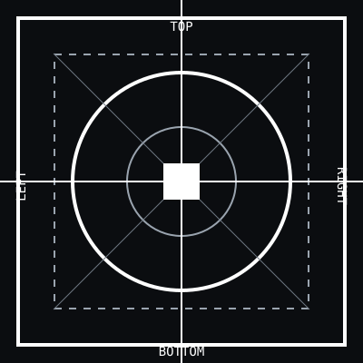

ASPECT RATIOS
1:1
16:9
9:16
RESPONSIVE TARGET 01

This site exists only to test deployment, scaling and rendering. It has no production routes and no shared deployment target with any working website.
DEPLOYMENT STATUS
ASPECT RATIOS
ALIGNMENT GRID
TYPE SCALE
EDGE + SAFE AREA
GEOMETRY / DISTORTION
PIXEL / PERCENT RULER
OVERFLOW TEST
No horizontal page scroll should appear.
BUTTON / TAP TARGETS
Targets expose cramped mobile spacing immediately.
CSS CONTAINER RESPONSE
SVG RENDERING
LIVE RENDER READOUT
VISUAL PASS CHECKLIST